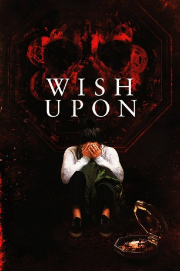

#7587 Wish Upon
 gesehen am 16.12.2017
gesehen am 16.12.2017
 
 IMDB-Wertung: 5.1 / 10
IMDB-Wertung: 5.1 / 10  Tomatometer: 20
Tomatometer: 20  Metascore: 32
Metascore: 32 
Die 17-jährige Clare Shannon (Joey King) und ihre Freundinnen Meredith (Sydney Park) und June (Shannon Purser) haben es nicht leicht an der Highschool. Clares Vater (Ryan Phillippe) schenkt ihr eines Tages eine alte Spieluhr mit einer Inschrift, die besagt, dass dem Besitzer der Uhr alle Wünsche in Erfüllung gehen sollen. Clare hat nichts zu verlieren und spricht ihren ersten Wunsch aus. Zu ihrer Überraschung erfüllt er sich! Kurze Zeit später besitzt sie alles, was sie sich jemals erhofft hat: Geld, Ansehen und ihren Traumprinzen. Alles scheint perfekt zu sein. Doch dann sterben die Menschen, die ihr am nächsten stehen, auf grausame Art und Weise. Clare hat Blut an ihren Händen und muss die Spieluhr loswerden, bevor sie selbst und alle, die sie liebt, den ultimativen Preis zahlen müssen.
Jahr: 2017
Dauer: 90 Minuten
FSK: 16
Land: USA Studio: Broad Green PicturesTonspuren: DTS - ,
Untertitel:
Auflösung: 1080p (1920x800) Größe: 4106 MB
Genre: Thriller, Horror, Fantasy
Regisseur: John R. Leonetti
Drehbuch: Barbara Marshall
Soundtrack: Jules Larson
Darsteller:
 Joey King als Clare Shannon
Joey King als Clare Shannon Ryan Phillippe als Jonathan Shannon
Ryan Phillippe als Jonathan Shannon Ki Hong Lee als Ryan Hui
Ki Hong Lee als Ryan Hui- Mitchell Slaggert als Paul Middlebrook
- Shannon Purser als June Acosta
- Sydney Park als Meredith McNeil
 Elisabeth Röhm als Johanna Shannon
Elisabeth Röhm als Johanna Shannon- Josephine Langford als Darcie Chapman
- Alexander Nunez als Tyler Manguso
 Daniela Barbosa als Lola Sanchez
Daniela Barbosa als Lola Sanchez Kevin Hanchard als Carl Morris
Kevin Hanchard als Carl Morris Sherilyn Fenn als Mrs. Deluca
Sherilyn Fenn als Mrs. Deluca- Raegan Revord als Young Clare
- Alice Lee als Gina
- Albert Chung als Roland Moon
- Michelle Alexander als House Manager
- Natalie Prinzen-Klages als Twin #1
- Nora Prinzen-Klages als Twin #2
- Rosalina Lee als Spa Technician
- Ryan Taerk als Ryan's Friend
- Grace Faria als Student , uncredited
- Jake Gosden als Highschool Student , uncredited
- Sean Jones als High School Student , uncredited
 Jerry O'Connell als Previous Owner / Victim , uncredited
Jerry O'Connell als Previous Owner / Victim , uncredited- Victor Sutton als Uncle August
- Monique Soleil Stinchcombe als Freshman #1
- Danielle Pollari als Freshman #2
- Matt Haffner als Popular Student , uncredited
Datei: X:\2017(N-Z)\Wish Upon (2017, FSK16, 1920x800).mkv seit 21.11.2017
Festplatte: HD 2017(A-Z)-2018(A-F)
 Es gibt insgesamt 170 Filme in der Gruppe '2017(N-Z)'
Es gibt insgesamt 170 Filme in der Gruppe '2017(N-Z)'